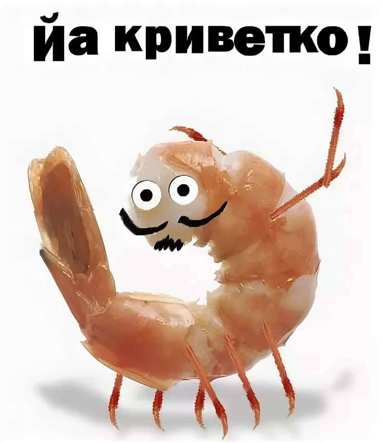

whoami
текст
выделенный текст
- курсив
- подчеркнутый
- перечеркнутый
- уменьшить шрифт
- надиндекс
- подиндекс
- выделение важных фрагментов курсивом
- выделение особо важных фрагментов полужирным
- выделение фрагмента подчеркиванием, когда требуется показать явно, что текст был вставлен после опубликования документа.
- выделение фрагмента перечеркиванием, когда требуется показать явно, что текст был удален после опубликования документа.
- выделение цитат курсивом
- отображение фрагментов программного кода моноширинным шрифтом
Какой-то заголовок
ЧТО
Ссылка на заголовок
Visit Yandex!
Ссылка
